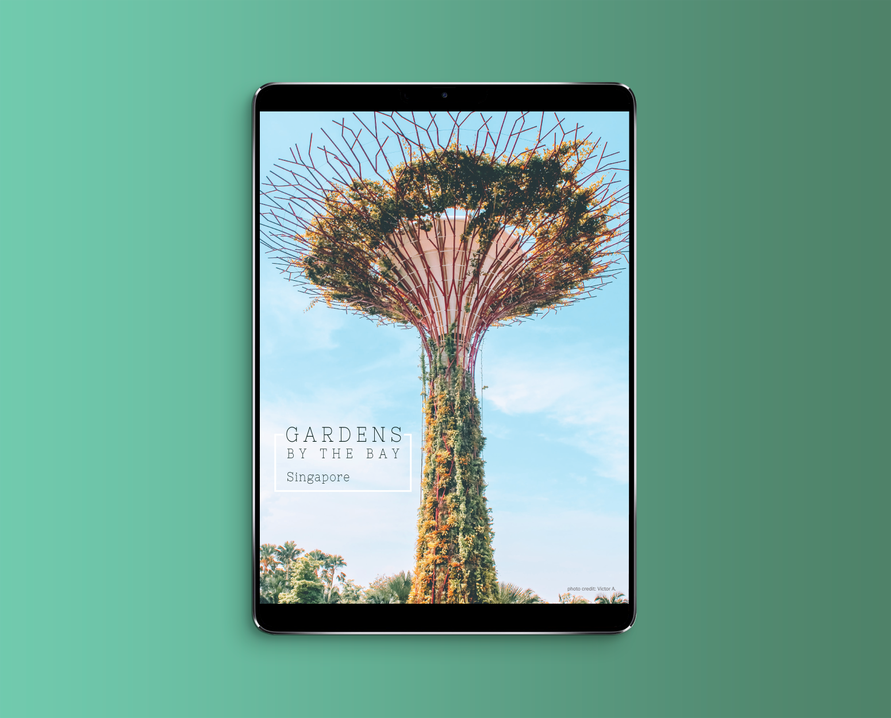
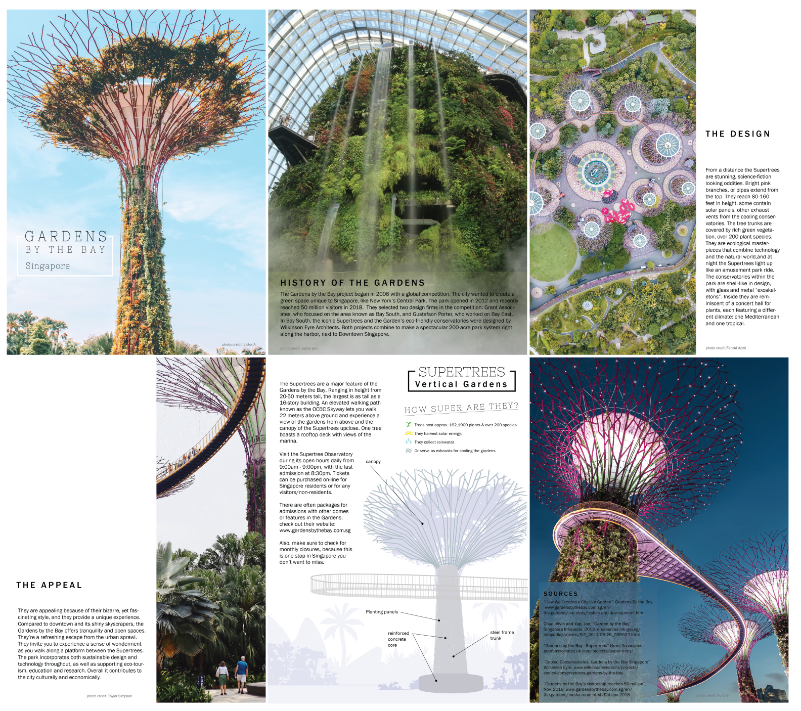
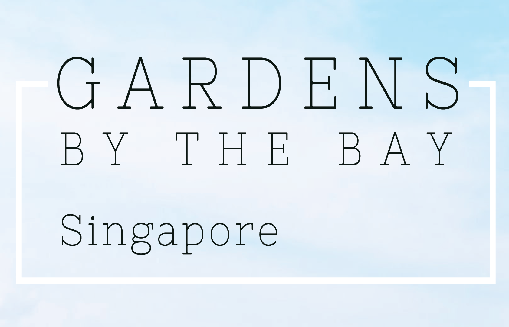

I was inspired by a trip to Singapore and the beautiful Gardens by the Bay landscape and architecture. This is an amazing place!
I focused on 3 aspects: the history, the design and the appeal of the gardens.

The images are the true heros and the design is based around them. Credits to the amazing photographers: Victor, Justin Lim, Fahrul Amzi, Taylor Simpson and Hu Chen who provided these free images on Unsplash.com.

For the supertrees I added facts about these sci-fi wonders. The illustrations and icons I created from scratch. The background image is AI generated from the prompt: "leafy jungle trees, palms fronds and palm trees".